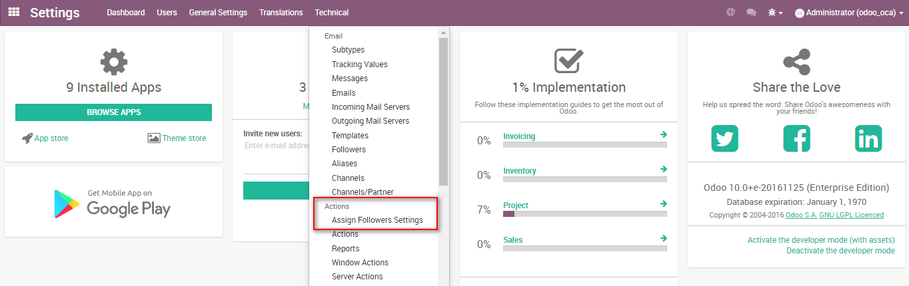
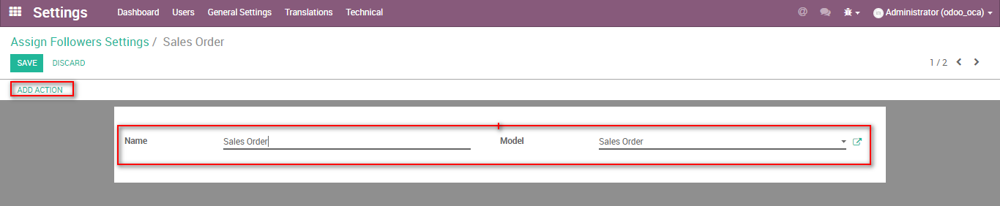
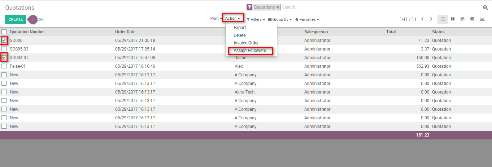
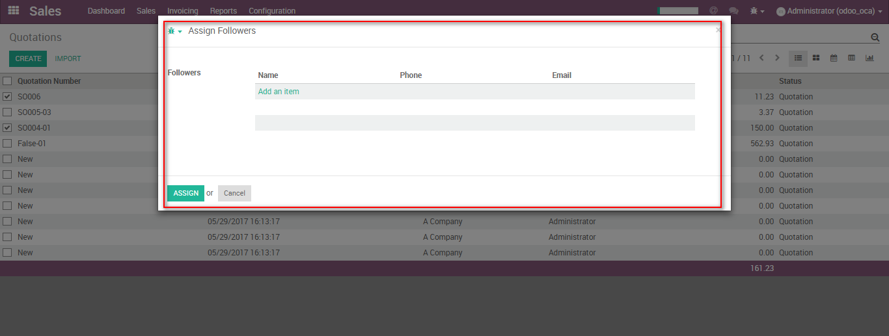

After installing the module Goto Settings -> Activate the developer mode and click on Technical menu -> Under actions -> User can see the Assign followers setting.
Open Assign follower and create a new record by providing name and selecting the model.
After mapping the model, click on Add action button.
Go to specified model and in list view select few records and then click on the Action button -> Assign Follower.
A wizard will appear on the screen and user can add followers.
